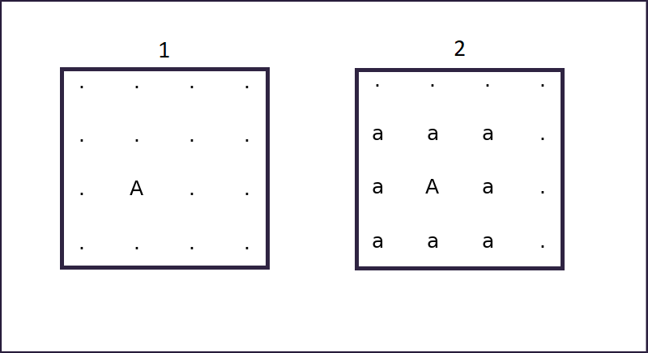
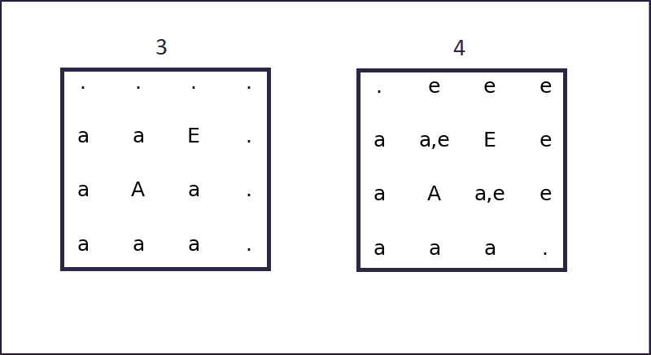

Random_genesis

- "Boggle-like" matrices
Boggle™ is a word game designed in the '70s, in which players try to compose as many words as possible with 16 letters arranged in a 4x4 matrix.
the matrix is "randomly" generated by shaking 16 dice, each having a letter on each of the 6 faces.
Similar games have been ubiquitously marketed under different names, even in digital form.
Given a matrix size and a dictionary of words, there are obviously numerous ways to generate the matrix.
How does one generate it in such a way that it contains the most words?
"Matrix generation" (Jul 2018)
>Previous update
Given the algorithm explained in the previous update, it is now possible to find all the words belonging to a given dictionary, contained in a certain matrix.
I found this repository which, after removing all words of legth 1, contains 370099 words. I will be using this to test my algorithms.
In principle the results should hold for any dictionary, since the algorithms i am using only use simple statistical analysis to extract basic features of the dataset that are independent from the details of its contents.
However, the size fo the dataset might matter, since a larger dictionary means a higher potential "word density" in a matrix, and thus affect the results.
The first couple of algorithms i tried are exceedingly simple and clearly won't generate results of the desired quality. They are however useful as a frame of reference.
For each generation algorithm, i performed 10^5 tests: for each test the function generates 4x4 matrix, which is then fed to the algorithm explained in the previous section,
which in turn outputs the list of valid words found.
The parameters used to evaluate each functions are: the number of words generated, and the total score obtainable from the generated matrix in a game of Boggle.
For the most time intensive ones the average generation time per matrix will also be considered.
> 1. random generation (RND)
The simplest and most obvious generation function: every cell in the matrix gets a random letter. This is not expected to give any useful result, but can be compared to other algorithms as a reference.
avg wordcount: 141.0837
avg score: 155.9937
> 2. Vowel-to-Consonant ratio (VCR)
A first example of an algorithm that uses a feature from the dataset. The fraction of vowels is trivial to extract from the dictionary, and is used in the generation as a measure of probability P.
Each cell gets a random vowel, with probability P, or a random consonant with probability 1-P.
avg wordcount: 197.7029
avg score: 229.7553
> 3. Frequency-based generation (FREQ)
While using the right fraction of vowels gave a clear improvement, there are letters that are just too uncommon, and can "ruin" an entire area of the matrix by making it mostly unusable.
To take this into account, the frequency distribution of all letters is calculated from the dictionary, and used for the sampling.
This way common letters will be prepresented the most, and uncommon ones will only appear rarely. The extraction is done using a standard "roulette wheel selection",
in which the probability of extracting a certain element is proportional to its frequency.
In short, each cell gets a random letter, sampled according to the distribution of letters in the dataset.
This gave a big step forward in the qality of the generated matrix.
avg wordcount: 405.4922
avg score: 577.1889
> 4. Balanced frequency-based generation (bFREQ)
Similar to the previous algorithm, but it tries to keep the amount of vowels and consonants balanced: at each step it calculates the fraction of vowels
in the part of the output that has already been generated, and then it picks a consonant or a vowel, depending whether it exceeds the fraction of vowels in the dataset or not.
For each step, if the current fraction of vowels is greater than the original fraction of vowels, pick a consonant according to the distribution. Otherwise, pick a vowel.
avg wordcount: 434.1407
avg score: 633.3808
> 5. frequency-based generation with constant vowels (7FREQ)
The previous algorithm can be simplified by using a constant number of vowels/consonants. Varying this number over multiple tests makes it possible to find the optimal value.
The results show that 7 is the optimal amount of vowels, for a 4x4 matrix.
The algorithm picks 7 vowels and 9 consonants. Then the output is scrambled using the Fisher-Yates shuffle provided by NumPy. This gave a tiny improvement.
avg wordcount: 450.364
avg score: 657.226
The functions tried up to this point don't take into consideration the actual structure of the matrix. In other words the position of a letter is not taken into account.
This signal however, should be used, since it is very important in the final quality of the output.
In order to do this, the dictionary is analyzed linearly, counting the pairs of adjacent characters. The result is arranged into an "adjacency matrix", in which the value
at position (n,m) is the number of times where the n-th letter is followed by the m-th letter in the dataset.
Since the order in a pair is irrelevant, the matrix is processed so that the value at (n,m) reresents the numer of times where the m-th letter follows the n-th or vice versa.
This is done by simply adding the two halves of the matrix toghether around the main diagonal.
No normalization is required, since "roulette sampling" doesnt need any. But if the matrix were to be normalized, every value would have to be divided by the total number of pairs in the dataset.
being, for each word in the dictionary, its length minus 1 (since the last letter of a word doesnt take part in any additional pair).
A simpler way to calculate this number would be the total number of letters, minus the total number of words.
The structure of the matrix is indicative of some features of the dataset. It is simmetrical, not because of the dataset but because of how it was generated. It shows darker bands
corresponding to letters that are generally uncommon (j,k,q,x...) as well as brighter bands corresponding to the most common ones (a,e,i...).
Bright spots indicate common pairs: 'in'/'ni', 're'/'er', and so on...
Given this "adjacency matrix", it is possible to exploit the knoweledge about "how frequently the letters x and y appead toghether" to construct better generation algorithms.
> 6. adjacency based sampling (ADJ)
From now on, the functions used will operate on the graph associated to the matrix (see previous update), in a way that is similar to a graph exploration algorithm.
Instead of traversing the graph in order to find something, the algorithm explores it assigning a letter to each cell it visits, until every cell has been visited.
As a first step, at a random position, a letter is placed according to the general distribution. Then the neighbouring positions are added to a queue, toghether with the
"parent" cell and the character assigned to it.
At each subsequent step, the algorithm picks a position from the queue, and then selects a character from the adjacency distribution of the character placed in the parent cell.

A roulette sampled letter is placed at a random position. (1)
Then, its neighbouring cells are marked as being adjacent to that letter. (2)
Already fixed letters are in upper case and will never be changed. Letters in lower case indicate that a cell has been marked as neighbour to a cell containing them.

The algorithm picks a position among those already marked, and samples a new letter from one of the distributions of adjacent letters.
In this case, it has picked the letter 'E' from the adjacency distribution of 'A'. (3)
Then again, neighbours are marked.
At the next iteration, if a cell marked with multiple neighbours is picked, the algorithm will essentially select from any distribution of the ones marked. (4)
This is repeated until the whole matrix is filled.
avg wordcount: 518.7722
avg score: 815.3461
Originally, the algorithm initialized the matrix with a "seed" of random letters of size n. This was thought to be beneficial, since it provided the initial steps with more
"information" to start with. In order to find the optimal size for the seed, a series of tests was performed while varying it.
One would expect sub-optimal results at the extremes: with n=1 the seed is a single cell with a random letter, and thus provides the system with very little information.
With a large n, the algorithm degenerates towards FREQ, since essentially it will mostly sample random letters from the distribution.
The result of the testing, however, showed that the best results are obtained with a seed of size 1: a single cell. In hindsight, since every value is either pulled from the general distribution or from the
distribution of one of its neighbours, giving the algorithm a larger seed only reduces the amount of cells that are defined relatively to their neighbours, thus making the output more randomic in nature.
> 7. combined adjacency based sampled (CAD)
This works the same as the previous one, with a foundamental difference:
When a cell is selected that has been marked as being next to multiple letters, instead of picking its letter from any of the corresponding distributions,
it is picked from the combination of those distributions.
Lets say that the cell is marked with the neighbours 'a','b' and 'c'. The new letter is sampled from the product of the three corresponding distributions.
This way, the new letter will be likely to be usable toghether with several of them, perhaps in the making of a longer word.
This produced a very strong improvement in the quality of the output: nearly doubling the average word count and more than doubling the average score. The latter
grows significantly faster since the score is not linear in the length of words, and this system favours, more than the previous ones, longer words.
avg wordcount: 940.5203
avg score: 1926.9532
> 8. greedy combined adjacency based sampled (greedy-CAD)
A small improvement of the last version: when the algorithm picks the cell to be visited next, instead of chosing at random among the cells that are marked in any way, it chooses the cell (or one of the cells)
that have the most marks. The selected cells are those for which several neighbours are already defined, and for which the combination of distributions will include the most information
from the near area of the matrix.
It becomes non trivial to implement the selection function efficiently, since it will be performed at every iteration: keeping the queue of cells sorted by "amount of marks" would cost O(nlong(n)) per iteration
(where n is the length of the queue) if one used any standard sorting algorithm or, using an insertion sort, O(n) per element added to the queue.
It is more efficient not to keep the queue sorted at all. It is true that doing it would make the extraction operation O(1) constant, but the cost of finding a maximum in an unsorted list remains O(n) per iteration,
which is less than O(nlog(n)) per iteration, and much less that O(n) per added element, since every iteration adds several elements to the queue.
This version of the algorithm provided a small benefit to the quality of the output, at basically no computational cost.
The average generation time per matrix is still ~0.5 milliseconds.
avg wordcount: 989.7361
avg score: 2077.3797
> 8. greedy_CAD with probability decrease (greedy-dCAD)
An other small tweak: the probability of extracting a letter from any distribution decreases as instances of that letter are extracted multiple times.
In other words, the likelyhood of extracting a certain value many times decreases as you keep extracting it.
In theory this should have improved the outputs reducing the cases in which the same letter appears too many times, cluttering the matrix with redundant
words that cannot be used, since words can only be counted once.
In practice, it didnt improve the output at all, but rather it reduced slightly both the average number of words and the average score.
I am unsure why this happened, but i suspect it has something to do with the fact that the random roulette sampling is not agressive enough to cause
the problem in the first place, and so the change actually decreases the probability associated with common letters for no added benefit.
This version of the algorithm provided a small benefit to the quality of the output, at basically no computational cost.
The average generation time per matrix is still ~0.5 milliseconds.
avg wordcount: 984.063
avg score: 2066.622
This is the comparative analysis of the algorithms:
In conclusion, the most successful among the algorithms presented offers a 20-times improvement over a plain random sampling,
as well as an average score that is more than 100% better than frequency sampling.
A possible way to increase the performances even more would be to not only take into account pairs, but also triplets of letters.
Extracting such information from teh dataset shouldnt be an issue, since it can be done similarly to what has already been done with pairs,
but producing a 3D instead of a 2D matrix.
The problem would become marking cells with two different types of information and somehow blending them toghether before the sampling process.
Also, this kind of development probably gives stronger improvements for matrices that are bigger than 4x4, the size usually used in this kind of games.
The relevant code is available here.